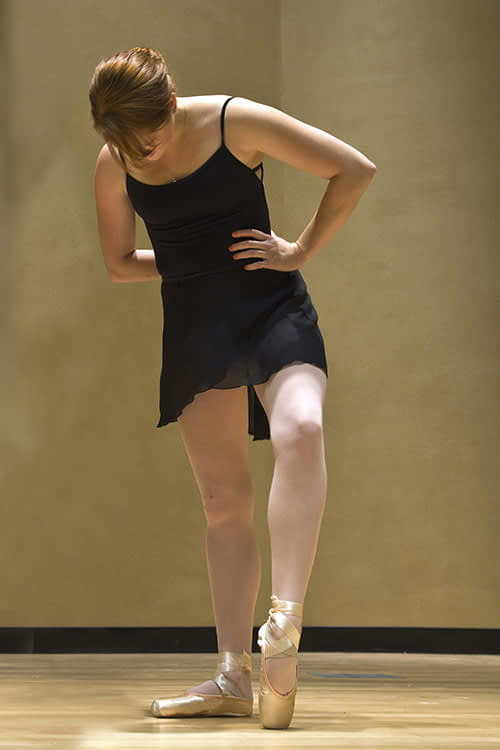
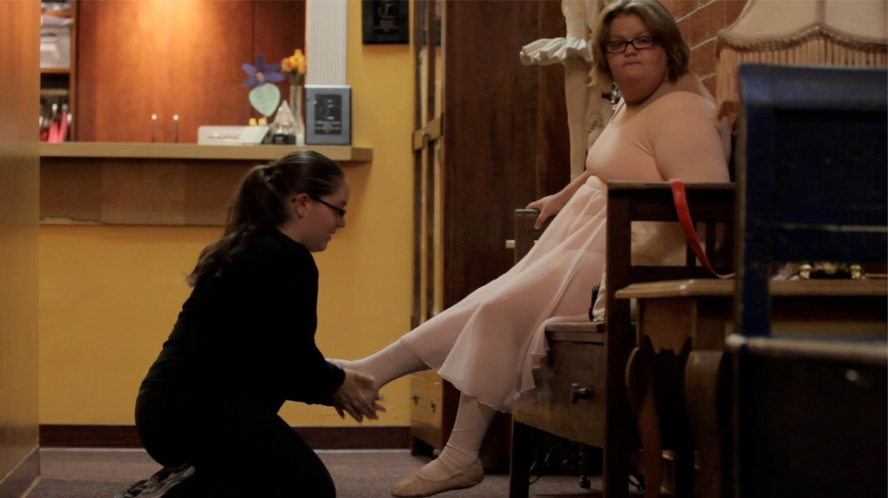
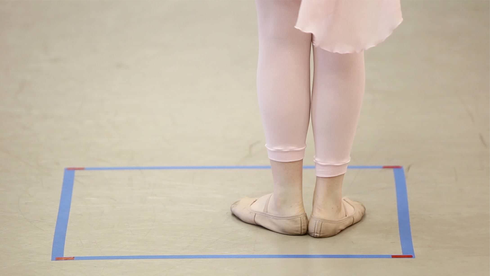
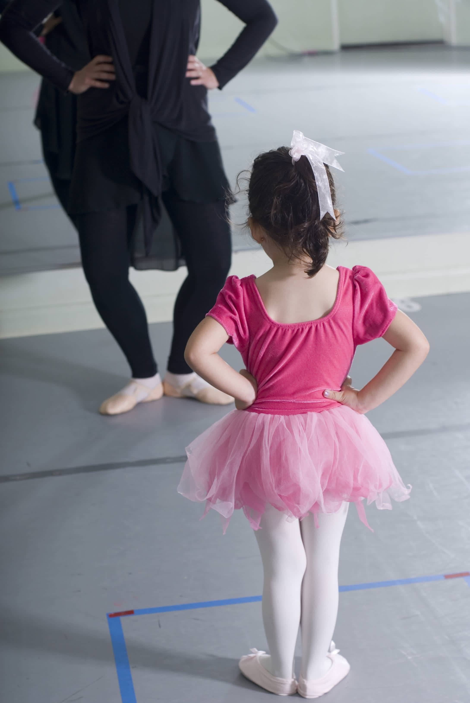
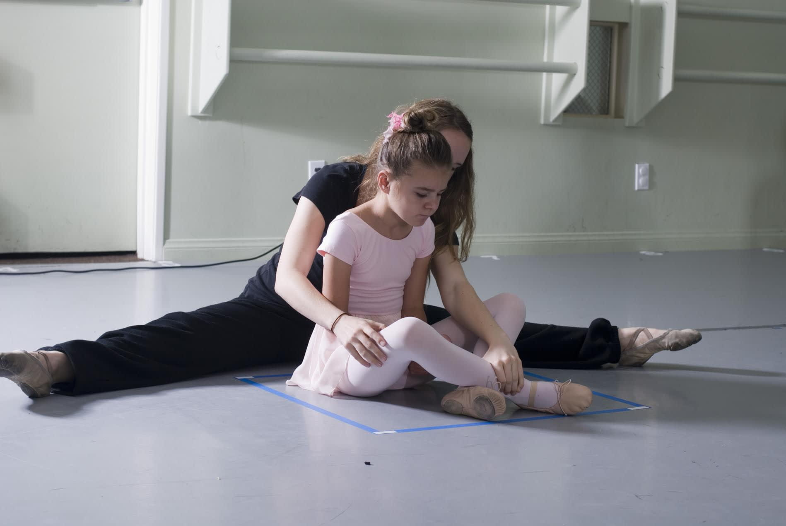
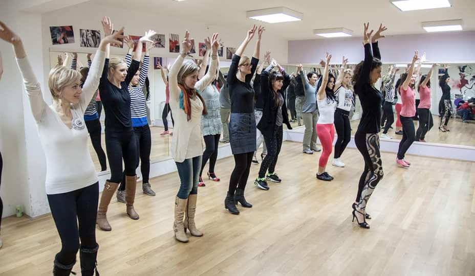
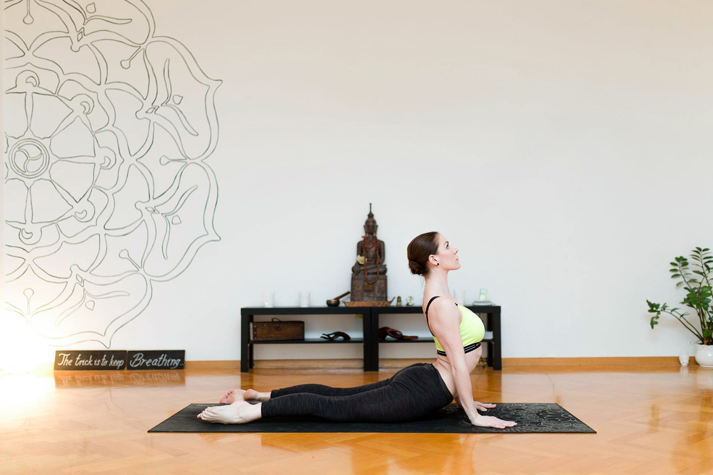

-
Silabus
Baletni program za djecu i mlade
⚫ Kreativni pokreti (3-5 godina)
⚫ Početnički - I & II Stupanj (6-13 godina)
⚫ Srednji - I & II Stupanj (10-16 godina)
Specijalni baletni program
⚫ Balet prilagodljiv za djecu i mlade s posebnim potrebama (Metoda Schlachte™)
⚫ Satovi baletne špice “pointe”
⚫ Tehnika napredovanja u baletu
⚫ Privatni trening i satovi za pripremu za audicije.
Adult Fitness Programs
U skladu sa svojom filozofijom i misijom, nastavni plan DanzArt-a temelji se na baletnim osnovama i tehnici za poučavanje djece, mladih i odraslih o značenju, radosti i postignuću koji proizlaze iz predanosti i teškog rada u kontekstu lijepog oblika umjetnosti, s posebno dizajniranom nastavom za povećanje tehničkih vještina, izdržljivosti i discipline primijenjene uzrastu i razini učenika.
Iako se plan nastave DanzArt-a bazira na baletnom programu, također se nude drugi stilovi plesa kao jazz dance, suvremeni ples i latinski plesovi, potičući učenike na nadopunu svojeg treninga plesa satovima baleta jer je balet temelj svih tehničkih oblika plesa zbog mnogih prednosti koje pruža plesačima. Učenje baletnih satova pored ostalih stilova plesa dat će plesačima dobru osnovnu liniju, učinit će svaki drugi stil plesa, poboljšat će njihovu opću plesnu tehniku, koordinaciju, svijest tijela, muzikalnost i mnogo toga.
* Pogledajte: Neke činjenice o baletu i Vrijednost baleta za sve vrste plesača u KORISNIM BILJEŠKAMA.
Kreativni pokreti
(3-5 godina)
Za ovaj uzrast nastava je dizajnirana tako da poučava djecu ljubavi prema plesu, potiče se umjetnička kreativnost, razvijaju općenite motoričke sposobnosti – pomoću osnovnih baletnih pozicija šaka, ruku, stopala, noga i glave, baletne šetnje, trčanja, marširanja, preskakivanja i skokova. Uče se osnovni elementi istezanja, uspravno držanje, razvija svijest o prostoru i muzikalnosti. Polako se uspostavljaju temelji za disciplinu plesa i uvode se početci baletnog rječnika na jedan zabavan i kreativan način. Osim plesnih vještina, mladi plesači uče slijediti redoslijed te provoditi jednostavne upute u jednoj grupnoj okolini punoj igara, priča i maštovitih vježbi.
Početnički - I & II Stupanj
(6-13 godina)
Ove grupe su usredotočene na razvijanje velikih i malih motoričkih vještina i koordinacije, koristeći baletne standarde konzervatorija. Učenici se upoznavaju s baletnim štapom i baletnim podom, s francuskim rječnikom vezanim za balet kao i sa specifičnim baletnim pokretima upotrebljavajući ispravnu baletnu tehniku. Naglašavaju se kreativni i izražajni pokreti, timski rad, poštivanje glazbe i poticanje ljubavi prema pokretu.
Srednji - I & II Stupanj
(10-16 godina)
Primarni cilj ovih satova je nastavak razvijanja koordinacije, poticanje ljubavi i poštivanje pravilnih baletnih tehnika, pokreta i glazbe. Rad na satovima je usredotočen na razvijanje velikih i malih motoričkih vještina i na rječnik baleta na francuskom jeziku. Učenici počinju učiti sve složenije baletne korake koristeći pravilnu tehniku i uvodi ih se u specifične izražajne koncepte pokreta i komuniciranje preko pokreta.
* Pogledajte: Potpuna integracija djeteta u KORISNIM BILJEŠKAMA.
Baletni program za odrasle
Balet za odrasle je odličan i opsežan oblik vježbanja koji promiče dobro zdravlje i emocionalno bogatstvo. U baletnim vježbama svaki mišić sudjeluje u pokretu, a istovremeno se upotrebljavaju mnoga područja mozga za razvijanje ravnoteže (za izvođenje laganih pokreta), umjetnost (za interpretaciju glazbe) i pamćenje (za učenje koraka). Osim toga, klasična glazba koja se pušta na satovima baleta potiče razvoj vala alphe, i tako jača kreativnost i suzbija depresiju.
Zahvaljujući koristima u pogledu zdravlja i emocionalnog blagostanja koje balet pruža, danas sve više odraslih diljem svijeta pohađa satove baleta kao alternativu za druge oblike vježbanja. DanzArt-ov Baletni Program za odrasle obuhvaća savršenu mješavinu dubokog muskularnog podmazivanja te otpornosti, gracioznost baleta, fleksibilnost joge i učvršćivanje temeljeno na pilatesu. Program je posebno dizajniran zadovoljenju raznih potreba odraslih učenika, bez obzira na njihovu dob, spol, izgled ili plesne vještine. Svakome pruža ponešto, od početnika do naprednih, u jednom ugodnom okruženju koje je temeljeno na plesnom užitku.
Nastava rekreacijskog baleta za odrasle
Za razliku od mnogih oblika fitness vježbi balet je kompletna disciplina koja uključuje tijelo, um i kreativno izražavanje pojedinca. To je oblik umjetnosti i disciplina gdje plesač može uroniti u ljepotu glazbe i ući u drugi svijet. Učenik će vjerojatno uvidjeti kako će fizičke prednosti koje razvija ubrzo postati sporedne u usporedbi s jasnom ljepotom i uživanjem u plesu.
Satovi rekreacijskog baleta DanzArt-a za odrasle su ugodni, nisu kompetitivni i to je efikasan način da se postigne čvrstoća, tonus i fleksibilnost tijela. Oni su posebno dizajnirani za odrasle svih dobi i vještina. Počevši od potpunih početnika koji žele započeti program plesnog treninga po prvi puta do onih koji su napustili ples i žele se vratiti svojoj strasti, pa čak i za one koji nikada nisu prestali plesati.
Naglasak na satovima je na ispravnom poravnavanju / položaju tijela, snazi i fleksibilnosti i na pružanju formalnog treninga u temeljima klasičnog baleta. Baletni program za odrasle je otvoren program koji nudi predavanja za slobodno prisustvovanje svim odraslima u dvije različite grupe: početnici i srednji/napredni plesači.
Početnici
Nastava za početnike je zamišljena za one učenike koji su godinama imali tajnu želju plesati balet, ali nikada nisu stupili nogom u baletni studio, ili za one koji imaju osnovno znanje o temeljima baleta. Uzrast učenika može se kretati od starijih tinejdžera na dalje a nastava je koncentrirana na razumijevanje i poboljšanje pravilnog držanja, rotacije, fleksibilnosti i koordinacije.
Srednji / Napredni
Nastava za Srednju/Naprednu grupu je dizajnirana za one plesače koji žele uživati u baletu nakon dugogodišnje stanke ili za plesače amatere. Ova nastava koristi cijeli niz tehnika klasičnog baleta i mnogo brže napredovanje, nudeći povećanu tehniku i baletno izražavanje, kao i složenije kombinacije na štapu i na podu.
Danz-lett za odrasle

Pogram čine satovi baleta prilagođeni odraslim osobama. Nastava je namijenjena neplesačima, potpunim početnicima, bez obzira na godine, građu i mogućnosti. Nastava se sastoji od pojednostavljenih baletnih vježbi na podu, štapu i sredini te vježbi za mišićni tonus, temeljenima na pokretima koji služe kao alati za dubinsko oblikovanje, tj. jačanje i izduljivanje mišića. Program Danz-Lett je zabavan, elegantan, izazovan i učinkovit trening na instrumentalnu glazbu. Usmjeren je na poravnanje tijela, izometričke vježbe koje pogađaju i jačaju mišićne skupine, te na vježbe koje izduljuju tijelo i definiraju njegov oblik.
Neke od bezbrojnih blagodati Programa za odrasle temeljenom na baletu:
• Vrlo ugodan, zabavan i pomaže odstraniti stres
• Poučava držanje, koordinaciju i poštivanje glazbe
• Potiče držanje, gracioznost, kreativno i umjetničko izražavanje
• Oblikuje tijelo i tonificira mišiće bez povećanja mišićne mase
• Promiče tjelovježbu, fleksibilnost i kardiovaskularno zdravlje
• Jača leđa, stražnjicu i trbušne mišiće
Balet prilagodljiv za djecu i mlade s posebnim potrebama
Mnoga djeca i mladi s invaliditetom ne mogu uspjeti u tradicionalnoj školi baleta zbog čega su isključeni iz svih prednosti koje satovi baleta mogu donijeti, a to su samopouzdanje, prijateljstvo, samo-disciplina i užitak u pokretima. Ovaj program je osmišljen tako da pomogne djeci s posebnim potrebama naučiti tehniku i disciplinu baleta te im pomaže iskoristiti mnoge prednosti tog programa, koristeći Schlachte Method™.
Metoda Schlachte™
Schlachte Method™ je terapija temeljena na baletu koju je razvila Bonnie Schlachte u Sjedinjenim Američkim Državama i koja se pokazala uspješnom u poučavanju baleta djece u spektru autizma, djece sa invaliditetom u učenju i razvoju, djece s tjeskobnim poremećajima, problemima u ponašanju, djece s problemima ponašanja uzrokovane hiperaktivnošću – ADHD, slijepe, gluhe i djece koja nisu ambulatorni slučajevi, kao i neuro-tipične djece.
Ova metoda je koncipirana na principu da svako dijete ima sposobnosti koje mogu poslužiti kao odskočna daska za učenje novih vještina i jačanje osobnog osjećaja postignuća. Stoga se ova metodologija koristi raznim vrstama stilova poučavanja kako bi se prilagodila svim načinima učenja i kako bi ojačala svaku grupu vještina kod svakog djeteta
Vizualno učenje
Schlachte Method™ koristi razne vizualne metode poučavanja za pomoć učeniku i poučava vještine vizualnog učenja. U svakom predavanju koristi se vizualni plan kako bi se pomoglo djetetu u praćenju redoslijeda vježbi te kretanju iz jedne vježbe u drugu. Sva radna područja su jasno označena i imaju određene boje kako bi se djeca mogla usredotočiti na vježbe i kako bi upoznali granice svog osobnog prostora. Vježbe se izvode pred zrcalima kako bi se djeci omogućilo gledanje i ispravljanje svojih pokreta kada je potrebno. Svaki nastavni sat ima svoj DVD koji bi učenici trebali pogledati dvaput tjedno u vremenu između dva nastavna sata. DVD pokazuje sve vizualne prikaze koji se koriste na nastavi pa im pomaže u usvajanju pravilne baletne tehnike (npr. stopalo treba pomesti pod s ispruženom nogom u pokretu tendu pa djeca mogu vidjeti metlu pričvršćenu za nogu pri čemu stopalo “mete” pepeo). DVD-om se pokazuje djetetu izvođenje svake pojedine vježbe.
Auditivno učenje
Schlachte Method™ koristi klasičnu baletnu glazbu koja je posebno skladana za svaki nastavni sat. Sva je glazba skladana za pomoć učeniku i poučava auditivnu vještinu vremenske usklađenosti (kada napraviti pokret) i emociju koja se izražava. Isto tako, sva je glazba skladana kako bi se uskladila sa slikama i pričom koja je ispričana na DVD-u. Kao dio procesa auditivnog učenja učitelj otpjeva (umjesto da izgovara ili odbrojava) svaku vježbu i tako pomaže djeci naučiti pravilne kombinacije.
Vestibularno učenje

Schlachte Method™ se temelji prije svega na kretanju cijeloga tijela. Usredotoči se na svaki dio tijela, od izraza lica, do vrhova prstiju ruku i nožnih prstiju. Svaki nastavni sat sadrži posebne vježbe osmišljene kako bi pomogle djeci naučiti i izraziti emocije putem izraza lica, osjetiti pokrete kroz vrhove prstiju ruku i nožnih prstiju te kako koristiti kralježnicu (kako je savijati i učvrstiti). Ova metoda također pomaže naučiti svako dijete kako postati svjestan svoga tijela kao i vježbati tjelesnu koordinaciju. Također, svaki nastavni sat zahtijeva različite razine energičnosti (ovisno o vježbi) čime se djecu uči kako upravljati svojom razinom energije ovisno o tome što zahtijeva pojedina vježba. Ove vježbe također poučavaju prostornu svjesnost zahvaljujući određenom prostoru na podu i kombinacijama koje se izvode s drugim učenicima.
Emocionalna inteligencija
Schlachte Method™ poučava emocionalnu inteligenciju putem raznih sredstava. Prvi korak emocionalne inteligencije je sposobnost prepoznavanja emocija. Ova metoda poučava djecu da prepoznaju ljutnju, sreću, tugu, iznenađenje i sl. pomoću pokreta tijela, muzikalnosti i izraza lica. Ova metoda također koristi priču za izražavanje emocija. Svaku vježbu prati priča koja odgovara pokretu i emocijama. Djeci se ispriča priča, a zatim ih se poučava kako je izraziti putem pokreta i izraza lica. U sklopu ove metode djecu se poučava u sigurnom i strukturiranom okruženju pa se mogu usredotočiti na emotivno izražavanje bez ikakve nelagode ili straha. Uloga DVD-a je upoznati dijete sa materijom kako bi točno znalo što se očekuje od njega na nastavnom satu (tako se ublaži bilo kakvo iznenađenje). Vizualni plan pomaže smanjiti nelagodu, pomažući djetetu prepoznati koja vježba slijedi i kada će nastavni sat završiti. Sve promjene strukture nastavnog sata djetetu se priopćavaju unaprijed da ga se pripremi na ono što je drukčije. Isto tako, svaka senzorna distrakcija u studiju bit će svedena na minimum kako bi se pomoglo djetetu lakše usredotočiti na balet.
* Pogledajte: Terapeutske prednosti baleta i Potpuna integracija djeteta u KORISNIM BILJEŠKAMA.
Satovi baletne špice “pointe”

Ovi su nastavni satovi dizajnirani za plesače koji žele razviti čvrstoću i tehniku kako bi sigurno mogli napredovati u baletnim špicama i uglavnom se sastoje od vježbi na štapu i na podu za razvijanje čvrstoće, artikulacije i fleksibilnosti u stopalima, gležnjevima i nogama razvijajući istovremeno sposobnost kontroliranja ravnoteže na naletnim špicama.
Tehnika napredovanja u baletu
Ovo je dodatna nastava izvan normalne baletne nastave, kojom se učenik usredotočuje na važne mišićne grupe na koje se plesač baleta treba usredotočiti. Tehnika je dizajnirana kako bi pomogla plesačima razumjeti dubinu treninga mišićne memorije, temeljnu čvrstoću, stabilnost i poravnanje, poučavanjem o njihovoj osobnoj jačini i slabosti te učenju o anatomiji. Cilj ove nastave je pomoći plesaču da postane što je moguće bolji i snalažljiviji plesač.
Privatni trening i satovi za pripremu za audicije
Ovi nastavni satovi su upućeni osobnom razvoju sa specifičnim ispravcima i treningom što je odlično sredstvo za napredovanje i pripreme za audicije, natjecanja i priredbe. Ova vrsta treninga se temelji na ubrzanom učenju, s obzirom da se radi individualno brže se isprave specifične tehničke poteškoće, loše navike i greške. Ciljano se radi na slabostima, uređivanju tehnike i dotjerivanju umjetničkog dojma.
Dance Kinetics
Plesna kinetika je utemeljena na metodama Erica Franklina, a kombinira vizualizaciju, dinamične predodžbe i biomehanička načela ljudske anatomije u plesu kao i edukacijske vještine kojima se postiže dugotrajno poboljšanje u tijelu i umu.
Kombiniranje elemenata klasičnog baleta i suvremenog plesa te primjena tehnikâ osvještavanja tijela korištenjem funkcionalnog, učinkovitog pokreta poučava na jednostavan i ugodan način. Ovim programom kod polaznika se postiže progresivno stanje pravilnog držanja, fleksibilnosti, koordinacije pokreta, razvoj snage mišića, kao i postizanje osnove za učinkovit i suptilan pokret. Budući da je ovaj program namijenjen početnicima, nije potrebno predznanje.
Jazz Dance

Jazz dance je uzbudljiv ples koji se neprestano razvija te interpretira ritmičnost i sinkopiranost glazbe. Kombinacija je tehnike klasičnog baleta i modernog plesa s aktualnim oblicima popularnog plesa. Prožet ritmom jazz-a pravi je američki oblik umjetnosti. Jazz dance je energičan i zabavan ples koji se sastoji od jedinstvenih pokreta, zanimljivog footworka, velikih skokova i brzih okreta. Nastava uključuje zagrijavanje, istezanje, tjelesne izolacije glave, ramena, grudnog koša, stopala i ruku. Nastava jazz dancea uključuje poučavanje različitih plesnih tenika te snažnih pokreta prožetih oštrim akcentima ili izražajnih i lirskih. Potiče individualno izražavanje i razvoj osobnog stila.
Suvremeni ples

Sat će se bazirati na modernim i suvremenim plesnim tehnikama i idejama unutar kojih će naglasak biti stavljen na sukcesivnost i funkcionalnost pokreta. Uporaba tijela, njegove fleksibilnosti i unutarnje povezanosti kroz osmišljene vježbe razvijati će svijest o našim mogućnostima i granicama. Bavit ćemo se i raznim oblicima i energijama kretanja. Gledanjem i disanjem, fokusom i konekcijama u tijelu istraživati ćemo namjerne i slučajne raznolikosti. Razlike koje su u nama, našoj prisutnosti i svijesti povezivati ćemo s kakvoćom i načinom izvođenja pokreta. Kroz improvizacije i sekvence tražit ćemo razne oblike međusobnih povezanosti i nepovezanosti. Koordinacija tijela biti će osnovana na dahu. Dah i disanje predstavljaju najosnovniju povezanost tijela kojom će se ostvariti živost pokreta i osjećaj povezanosti s drugim plesačima. Sukcesivnost ostvarena dahom omogućit će mekoću, ali i nekada željenu eksplozivnost pokreta. Kroz vježbe i kombinacije, za početak jednostavnije s pokretima koje svakodnevno ponavljamo, a s vremenom kompleksnije i tehnički zahtjevnije, osvijestiti će se povezanost tijela i istražiti njegove mogućnosti u vlastitim okvirima.
Latin Moves & Senses
Program Latin Moves više je od tečaja na kojem polaznici korak po korak uče sve tehničke elemente južnoameričkih i karipskih plesova – salse, merenguea, bachate, cha cha cha, sona, bolera i tanga. Program nudi i kulturni uvid u svaki pojedini stil. U sklopu programa polaznici uče osjetiti i interpretirati latinoameričke i karipske ritmove, poboljšati posturu, uče se graciozno, senzualno kretati, razvijaju mekoću pokreta te plešu s istinskom atinoameričkom strašću – i to sve na tečaju vođenom na španjolskom. Što se tiče koristi za tijelo i um, kao i svaki oblik plesa – uz program Latin Moves polaznici mogu trenirati cijelo tijelo, smršaviti, doći u formu vježbama izolacija i zagrijavanja, aerobnim vježbama i radom na ciljanim zonama (bokovi, ramena, torzo, glava, ruke, noge), ovisno o temi ili plesnom stilu pojedinačnog sata ili nastavnoj cjelini. Također, ovaj plesni program je odličan način stimuliranja moždanih funkcija, povećanja koncentracija i pamćenja kroz kombinacije pokreta i sekvence. Poboljšava se kardiovaskularna kondicija, izvedbene mogućnosti i kontrola tijela, povećava se fleksibilnost i otklanja ukočenost, otpušta stres i to kroz zabavu.
Dobro oblikovano tijelo nije samo stvar pravilne prehrane i održavanja dobre forme, bitno je osvijestiti svoje tijelo, usvojiti naviku pravilnog držanja, otpustiti stres i uživati u pokretu. Zato se razmazite, iskoristite priliku i otkrijte čari plesa i dobre forme, razvijte nove vještine i dobro se zabavite!
Danz-Body Barre

Danz-Body Barre je zabavan i zarazan trening za cijelo tijelo koji spaja umjetničke i atletske elemente baleta, jačanje centra karakteristično za pilates te osvještenost i fleksibilnost joge.
Tko ne bi htio imati čvrstu guzu, izdužene noge, ravan trbuh i dobar tonus ruku?
Nastava je osmišljena tako da se posebno radi na tonusu mišića te na jačanju i izduživanju cijelog tijela izazovnim izometričnim i nenapadnim dubinskim radom mišića, što omogućuje mijenjanje vašeg tijela i posture iznutra. Rezultat: izduženi, vretenasti mišići, podignuta guza, definirane ruke i vitkije tijelo (bez dobivanja mase) - što doprinosi elegantnosti i gracioznosti.
Vidimo se na štapu i vidjet ćete rezultate.Yoga
Pilates
Individualni trening
TopCopyright © 2015 DanZart d.o.o.